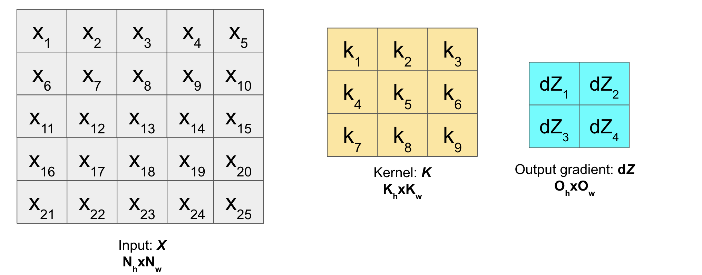
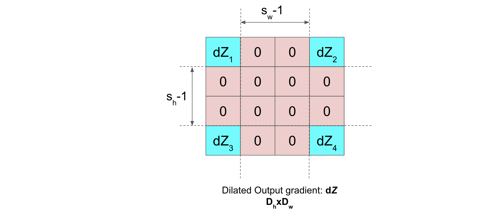
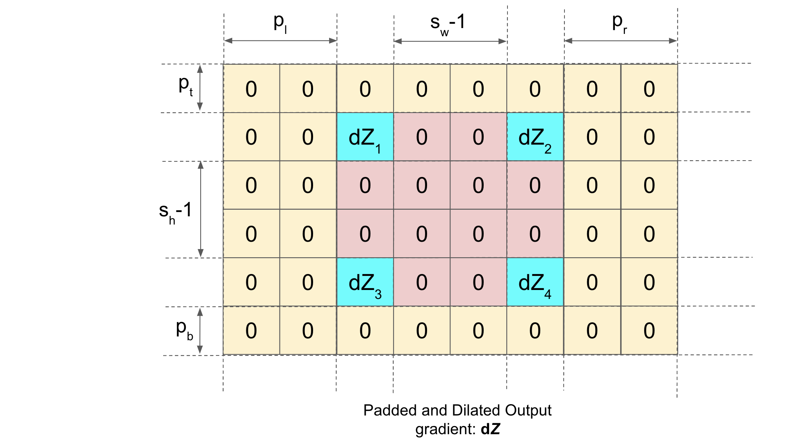
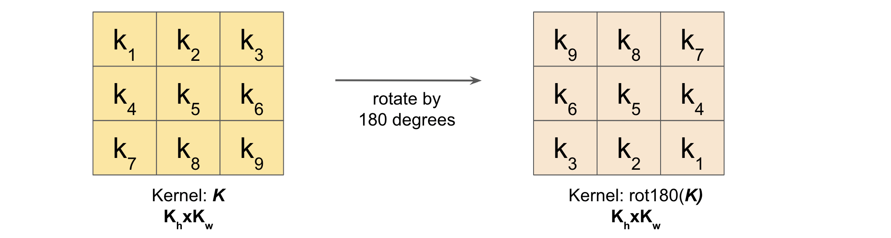
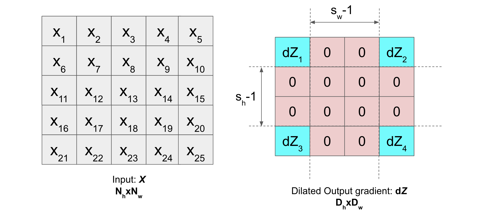

3.2.3 Backward Propagation Convolution layer (Vectorized)
Contents
3.2.3 Backward Propagation Convolution layer (Vectorized)#
Now let us write (step by step) most general vectorized code using numpy (no loops will be used) to perform backward propagation on the convolution layer.
Note: The notations used can be found in the previous section (link to previous section).
Procedure#

We are given the error \(dZ\) (partial derivative of the cost function \(J\) with respect to the output \(Z\)) and we need to find \(dX\), \(dK\) and \(db\) (Input and parameter gradients). I will not be going into the details of the derivation of Backpropagation (you can find it here in detail).
Gradient \(dX\)#
In order to obtain \(dX\), it turns out that the backpropagation operation is identical to a stride = 1 convolution of a padded, dilated version of the output gradient \(dZ\) with a 180 degrees rotated version of the filter \(K\)
This means, suppose following are the input matrix \(X\), kernel matrix \(K\) and output gradient of the layer \(dZ\):

Then, dilation of \(dZ\) will be (with dilation rate \((d_h, d_w)=(s_h, s_w)\)):

Now, in order to pad the dilated \(dZ\), we calculate the (\(p_t\), \(p_b\), \(p_l\), \(p_r\)) (follow notations) as follows:
\(p_h = N_h - D_h + K_h - 1\) and \(p_w = N_w - D_w + K_w - 1\)

Next, we’re also going to make one modification to the filter (rotate it by 180 degrees):

Thats it! Just convolve this padded and dilated \(dZ\) with the rotated Kernel (stride=1) and we have our \(dX\).
Gradient \(dK\)#
In order to obtain \(dK\), it turns out that the backpropagation operation is identical to a stride = 1 convolution operation of the input \(X\) with a dilated version of the output gradient \(dZ\)
We already have our input \(X\) and dilated output gradient \(dZ\). Just convolve it with stride=1.

Gradient db#
Just sum the gradient \(dZ\) along the batch axis and we have \(db\)
Code time#
Dilation#
Let us create a function dilate2D(X, Dr) (where Dr is the dilation rate) which dilates the matrix \(X\)
def dilate2D(X, Dr):
dh, dw = Dr # Dilate rate
H, W = X.shape
Xd = np.insert(arr=X, obj=np.repeat(np.arange(1,W), dw-1), values=0, axis=1)
Xd = np.insert(arr=Xd, obj=np.repeat(np.arange(1,H), dh-1), values=0, axis=0)
return Xd
Let us test this function on some \(X\) with Dr=(2,3)
import numpy as np
X = np.array([[1,2,3,4,5],
[4,5,6,7,8],
[5,6,7,8,9]])
print('X = \n\n', X, '\n')
Dr = (2,3) # Dilation rate
Xd = dilate2D(X, Dr)
print('Xd (Dilated) = \n\n', Xd, '\n')
X =
[[1 2 3 4 5]
[4 5 6 7 8]
[5 6 7 8 9]]
Xd (Dilated) =
[[1 0 0 2 0 0 3 0 0 4 0 0 5]
[0 0 0 0 0 0 0 0 0 0 0 0 0]
[4 0 0 5 0 0 6 0 0 7 0 0 8]
[0 0 0 0 0 0 0 0 0 0 0 0 0]
[5 0 0 6 0 0 7 0 0 8 0 0 9]]
Adding a batch of tensor as input with multiple channels for dilation
The function for such an input will be dilate2D_with_channels_batch(X, Dr)
def dilate2D_with_channels_batch(X, Dr):
dh, dw = Dr # Dilate rate
m, C, H, W = X.shape
Xd = np.insert(arr=X, obj=np.repeat(np.arange(1,W), dw-1), values=0, axis=-1)
Xd = np.insert(arr=Xd, obj=np.repeat(np.arange(1,H), dh-1), values=0, axis=-2)
return Xd
Testing time
import numpy as np
np.random.seed(10)
X = np.random.randint(0,10, size=(2,2,3,3))
Dr = (2,3)
Xd = dilate2D_with_channels_batch(X, Dr)
print('X = \n\n', X, '\n')
print('Xd = \n\n', Xd, '\n')
X =
[[[[9 4 0]
[1 9 0]
[1 8 9]]
[[0 8 6]
[4 3 0]
[4 6 8]]]
[[[1 8 4]
[1 3 6]
[5 3 9]]
[[6 9 1]
[9 4 2]
[6 7 8]]]]
Xd =
[[[[9 0 0 4 0 0 0]
[0 0 0 0 0 0 0]
[1 0 0 9 0 0 0]
[0 0 0 0 0 0 0]
[1 0 0 8 0 0 9]]
[[0 0 0 8 0 0 6]
[0 0 0 0 0 0 0]
[4 0 0 3 0 0 0]
[0 0 0 0 0 0 0]
[4 0 0 6 0 0 8]]]
[[[1 0 0 8 0 0 4]
[0 0 0 0 0 0 0]
[1 0 0 3 0 0 6]
[0 0 0 0 0 0 0]
[5 0 0 3 0 0 9]]
[[6 0 0 9 0 0 1]
[0 0 0 0 0 0 0]
[9 0 0 4 0 0 2]
[0 0 0 0 0 0 0]
[6 0 0 7 0 0 8]]]]
Backpropagation#
Now that we have dilation function and forward convolution function developed here(link to previous chapter), we can easily backpropagate to obtain the gradients.
def pad_input2D_with_channels_batch_and_many_filters(X, K, s, p='valid'):
if type(p)==int:
m, Nc, Nh, Nw = X.shape
pt, pb = p, p
pl, pr = p, p
elif type(p)==tuple:
m, Nc, Nh, Nw = X.shape
ph, pw = p
pt, pb = ph//2, (ph+1)//2
pl, pr = pw//2, (pw+1)//2
elif p=='valid':
return X
elif p=='same':
m, Nc, Nh, Nw = X.shape
F, Kc, Kh, Kw = K.shape # F = number of filters
sh, sw = s
ph = (sh-1)*Nh + Kh - sh
pw = (sw-1)*Nw + Kw - sw
pt, pb = ph//2, (ph+1)//2
pl, pr = pw//2, (pw+1)//2
else:
raise ValueError("Incorrect padding type. Allowed types are only 'same', 'valid', an integer or a tuple.")
zeros_r = np.zeros((m, Nc, Nh, pr))
zeros_l = np.zeros((m, Nc, Nh, pl))
zeros_t = np.zeros((m, Nc, pt, Nw+pl+pr))
zeros_b = np.zeros((m, Nc, pb, Nw+pl+pr))
Xp = np.concatenate((X, zeros_r), axis=3)
Xp = np.concatenate((zeros_l, Xp), axis=3)
Xp = np.concatenate((zeros_t, Xp), axis=2)
Xp = np.concatenate((Xp, zeros_b), axis=2)
return Xp
def conv2d_with_channels_batch_and_many_filters(X, K, s, p='valid', mode='front'):
# padding
Xp = pad_input2D_with_channels_batch_and_many_filters(X, K, s, p=p)
m, Nc, Nh, Nw = Xp.shape
F, Kc, Kh, Kw = K.shape # F = number of filters
sh, sw = s # strides along height and width
Oh = (Nh-Kh)//sh + 1
Ow = (Nw-Kw)//sw + 1
strides = (Nc*Nh*Nw, Nw*Nh, Nw*sh, sw, Nw, 1)
strides = tuple(i * Xp.itemsize for i in strides)
subM = np.lib.stride_tricks.as_strided(Xp, shape=(m, Nc, Oh, Ow, Kh, Kw),
strides=strides)
if mode=='front':
return np.einsum('fckl,mcijkl->mfij', K, subM)
elif mode=='back':
return np.einsum('fdkl,mcijkl->mdij', K, subM)
elif mode=='param':
return np.einsum('mfkl,mcijkl->fcij', K, subM)
Gradient \(dX\)
Forward Propagation
np.random.seed(10)
X = np.random.randint(0,10, size=(256,1,36,47))
# different Kernel for each channel and many such Kernels
K = np.random.randint(0,10, size=(2,1,5,8))
s = (7,4)
Xp = pad_input2D_with_channels_batch_and_many_filters(X, K, s, p='same')
Z = conv2d_with_channels_batch_and_many_filters(X, K, s, p='same')
Z.shape
(256, 2, 36, 47)
# Given Gradient of output dZ
dZ = np.random.randint(0,10, size=Z.shape)
# Dilate dZ
dZ_D = dilate2D_with_channels_batch(dZ, Dr=s)
# Pad the dilated dZ
m, F, Hd, Wd = dZ_D.shape
m, Nc, Nh, Nw = Xp.shape
m, Nc, Nhx, Nwx = X.shape
F, Kc, Kh, Kw = K.shape
ph = Nh - Hd + Kh - 1
pw = Nw - Wd + Kw - 1
dZ_Dp = pad_input2D_with_channels_batch_and_many_filters(dZ_D, K, s, p=(ph, pw))
dZ_Dp.shape # padding it to make its size same as Xp (padded X).
(256, 2, 254, 199)
Rotation by 180 degrees
This is just a one line implementation
Example
K1 = np.arange(1,10).reshape(3,3)
K1
array([[1, 2, 3],
[4, 5, 6],
[7, 8, 9]])
K1_rotate_180 = K1[::-1, ::-1]
K1_rotate_180
array([[9, 8, 7],
[6, 5, 4],
[3, 2, 1]])
Kr = K[:, :, ::-1, ::-1]
Kr
array([[[[7, 0, 3, 7, 0, 8, 2, 0],
[8, 7, 9, 5, 4, 1, 6, 6],
[1, 7, 2, 9, 0, 0, 1, 8],
[7, 8, 2, 1, 0, 0, 2, 6],
[3, 6, 6, 4, 8, 9, 0, 0]]],
[[[9, 0, 2, 5, 1, 0, 6, 6],
[9, 1, 5, 3, 8, 5, 7, 0],
[0, 9, 3, 0, 2, 9, 3, 4],
[6, 2, 1, 9, 6, 3, 8, 6],
[6, 5, 6, 0, 5, 7, 8, 3]]]])
Finally it is time for convolution
sb = (1,1)
dXp = conv2d_with_channels_batch_and_many_filters(dZ_Dp, Kr, s=sb, p='valid', mode='back')
dXp.shape
(256, 1, 250, 192)
Xp.shape
(256, 1, 250, 192)
X.shape
(256, 1, 36, 47)
We need a small function such that we can extract the original input errors from the padding ones. This you can consider as backpropagation through padding operation
def padding2D_backwards_with_channels_batch(X, Xp, dXp):
m, Nc, Nh, Nw = Xp.shape
m, Nc, Nhx, Nwx = X.shape
ph = Nh - Nhx
pw = Nw - Nwx
pt, pb = ph//2, (ph+1)//2
pl, pr = pw//2, (pw+1)//2
dX = dXp[:, :, pt:pt+Nhx, pl:pl+Nwx]
return dX
dX = padding2D_backwards_with_channels_batch(X, Xp, dXp)
dX.shape
(256, 1, 36, 47)
Gradient \(dK\)
We have dZ_D = Dilated output gradient dZ and input \(X\) (padded). Just convolve them with stride=1 to get \(dK\)
sb = (1,1)
ph = Nh - Hd - Kh + 1
pw = Nw - Wd - Kw + 1
dZ_Dp = pad_input2D_with_channels_batch_and_many_filters(dZ_D, K, s, p=(ph, pw))
dK = conv2d_with_channels_batch_and_many_filters(Xp, dZ_Dp, s=sb, p='valid', mode='param')
dK.shape
(2, 1, 5, 8)
K.shape
(2, 1, 5, 8)
Gradient db
db = np.sum(dZ, axis=0)
db.shape
(2, 36, 47)
Congrats! We have successfully calculated the gradients of the input, and the parameters for the convolution layer using only numpy (and no for loops)!